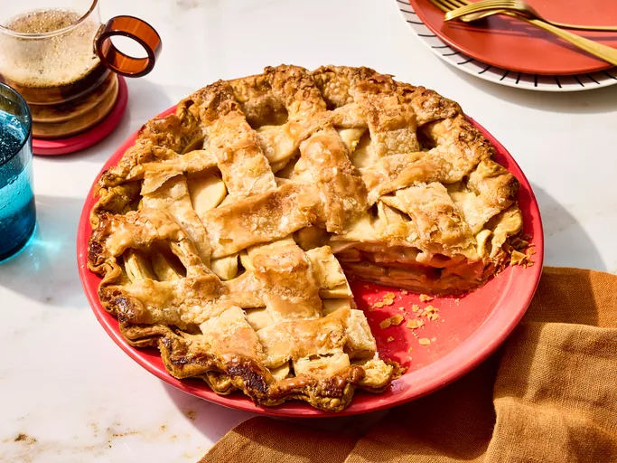

Apple Pie

Description
If you're looking for the best homemade apple pie recipe of all time, you've come to the right place. Grandma Ople's recipe is one of our most popular recipes ever. Try it today to learn what all the hype is about!
Ingredients
- Apples
- Butter
- Flour
- Pie Crust
- Sugars
How to make it
- Make the filling: On the stove, make a paste with flour and butter. Add the sugar and water and bring to a boil. Simmer, then remove from heat.
- Assemble the pie: Press one crust into a pie plate. Place the sliced apples on the bottom crust. Use the top crust to make a lattice crust according to the recipe below. Pour the butter-sugar mixture over the lattice crust.
- Bake the pie: Bake the pie in a preheated oven until the apples are soft and the crust is golden brown.